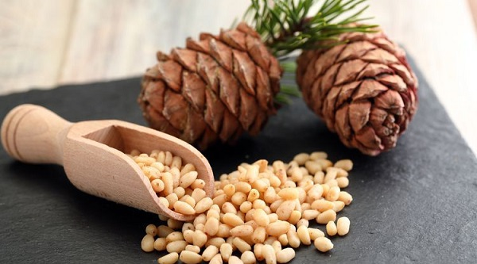

Bronşit ve kalp hastalıklarında faydalıdır. Ruhsal sorunlara iyi gelir. Çam kozalaklarının içinden çıkarılır. Kuvvetli bir besindir. Günde 2 çorba kaşığından (25 gram) fazla yenilmemelidir. Verem ve akciğer hastalıklarının çabuk iyileşmesine yardımcı olur. Ruhi çöküntüyü giderir.
